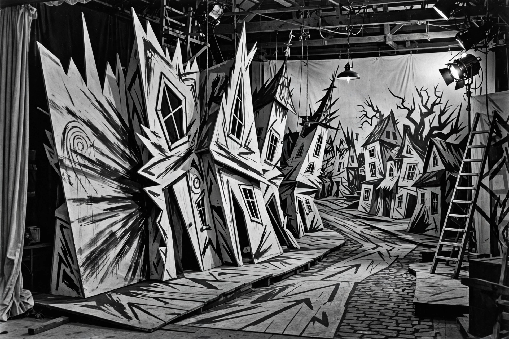

Robert Wiene

| Robert Wiene | |
|---|---|
| Born | 27 April 1873, Breslau, German Empire |
| Died | 17 July 1938 (aged 65), Paris, France |
| Occupation | Film director, screenwriter, producer |
| Known for | The Cabinet of Dr. Caligari |
Robert Wiene (27 April 1873 – 17 July 1938) was a German film director and an important figure in German Expressionist cinema. His most famous film, The Cabinet of Dr. Caligari (1920), is considered a landmark of world cinema.
Career
Wiene was born in Breslau (now Wrocław) and studied law before turning to the theatre in Berlin as an actor, producer, and director. He moved into film during the First World War, initially as a screenwriter, and directed his first films from 1914.
The Cabinet of Dr. Caligari
Written by Carl Mayer and Hans Janowitz and produced by Erich Pommer at Decla, Caligari tells of a hypnotist (Werner Krauss) who uses a somnambulist (Conrad Veidt) to commit murders. Its jagged, painted, anti-naturalistic sets by Hermann Warm, Walter Reimann, and Walter Röhrig made it the archetype of Expressionist film. Siegfried Kracauer's From Caligari to Hitler (1947) famously read the film as a premonition of authoritarianism in Germany, and debated ever since is the frame story that presents the narrator as insane — reportedly a change pressed on the writers by the producers, a version of events Wiene's role in which remains disputed.
Later work
Wiene's later films include Genuine (1920), Raskolnikow (1923, an adaptation of Crime and Punishment), The Hands of Orlac (1924), and The Rosenkavalier (1926). After the Nazi takeover he emigrated to Hungary and then France, where he died in Paris in 1938 while working on the spy film Ultimatum.